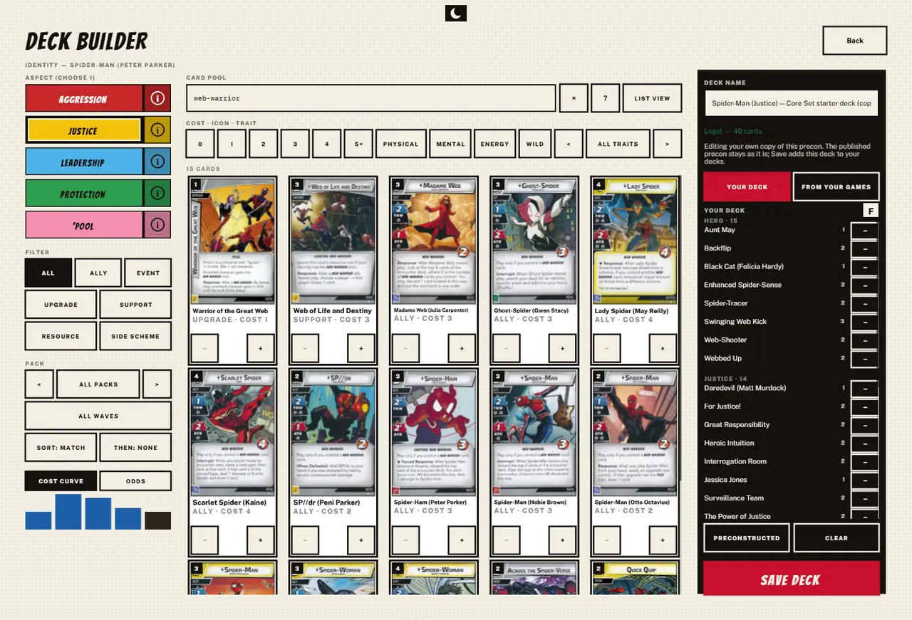
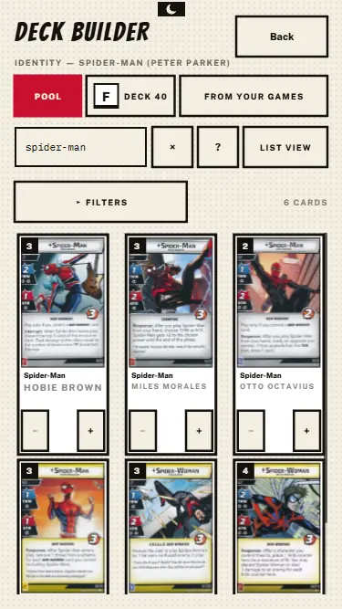
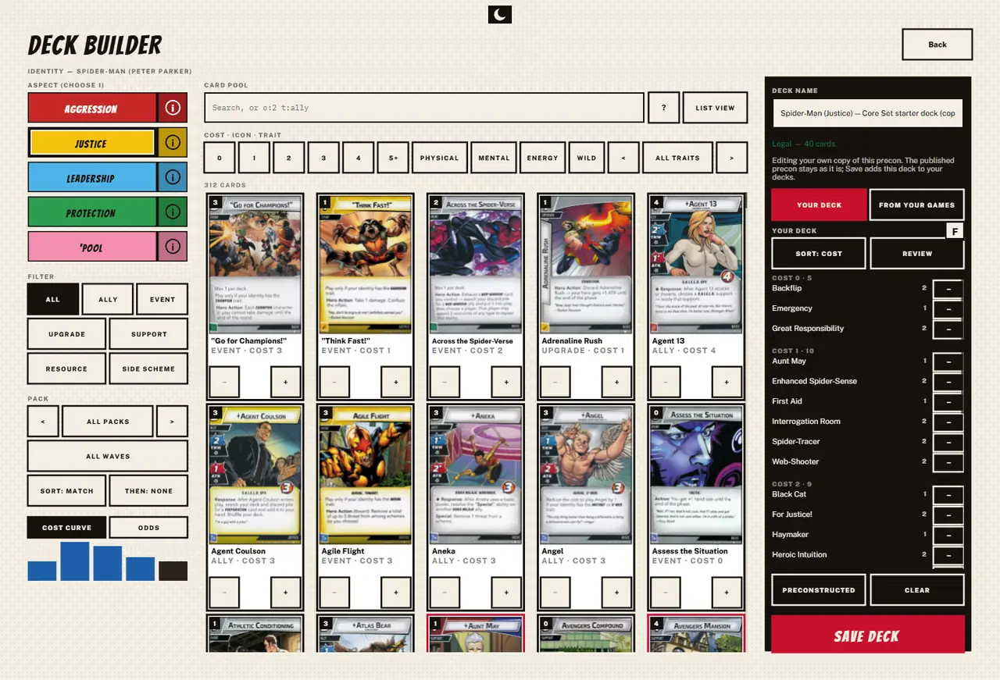
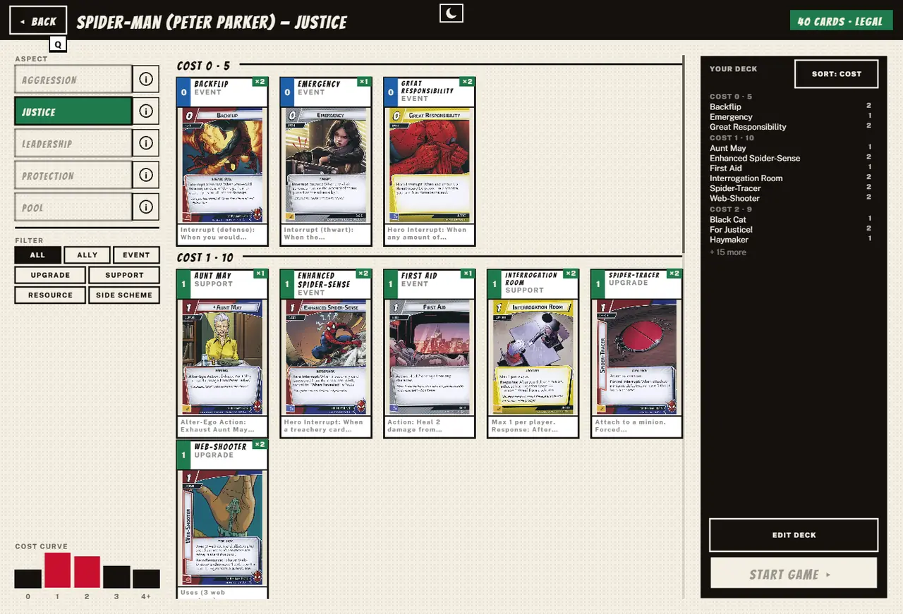
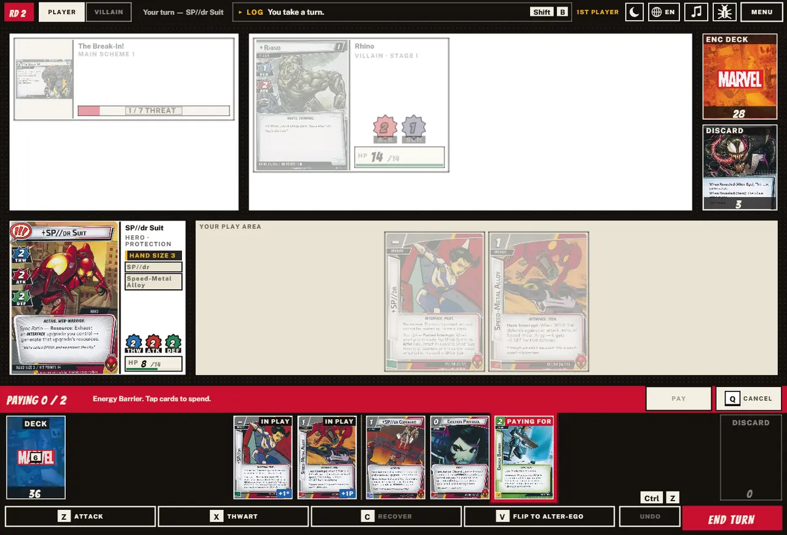
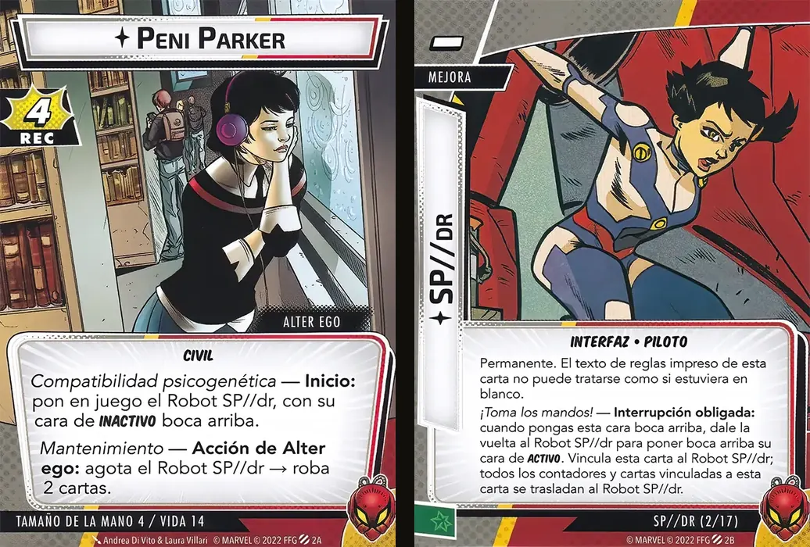

The card lists were hiding cards. Any two cards with the same name and type shared one row, so only one of the seven Spider-Man allies ever showed. Every card has its own row now, and search reads subtitles. A deck's own list sorts the way you want, the deck builder has a Review button, and SP//dr gets her missing scans. All of it came from one player's reports, so this release is a thank you to @bluefireF5ran.
where there used to be one. Spider-Woman, Hawkeye, Falcon, Thor and others came back too.
issues from one player, each fixed.
Aspect, Type, Cost and Name, remembered between visits.
more card faces in Spanish.
Searching Web-Warrior left cards out, and that turned out to be a bigger bug. The lists treated cards with the same name and type as reprints of one card and kept the first that passed your filters, which is why a card could come and go as you searched. Now only a true reprint folds into one row. Energy still shows once, and the deck builder and Decks both list every card.


A deck's own list has a Sort button now. It steps through Aspect, Type, Cost and Name, in the deck builder and in Deck check, and the game remembers your choice. Review sits beside it and opens Deck check on the deck as it stands, saved or not.



Every Sync Ratio option drew the SP//dr Suit. Each tile now shows the Interface it exhausts, and a keyboard or controller can reach every one of them, where before only the first could be spent.
The Suit's support side and the SP//dr pilot upgrade had scans, but the build never packed them, in any language. Both ship now. The two sides aren't cards in the pool, and that list is what decides which art goes in.
SP//dr's hand size of 3 asked "Are you sure?" every time she ended a turn with no cards. An empty hand no longer asks, because the draw fills it. With cards in hand, a hand size under 4 still asks.
23 more card faces now show in Spanish, Peni Parker and the SP//dr pilot among them. The Spanish set was built before a batch of new English scans arrived, so those faces had nothing to pair with. Fear No Evil and Shadowland are still mostly English, and any card without a Spanish scan shows its English one.

Every report here came from a player who took a minute to tell us. Keep them coming from Pause ▸ Report a problem, a GitHub issue or the community Discord.
Reported all eight of this release's issues, #594 to #601, from one round of playtesting. The trait search report is what uncovered the hidden cards. ¡Muchas gracias!
merged into main.
across the client, card data, art tools and this report.
the Spanish art manifest leads, then this report and the deck list.
across the same pull requests.